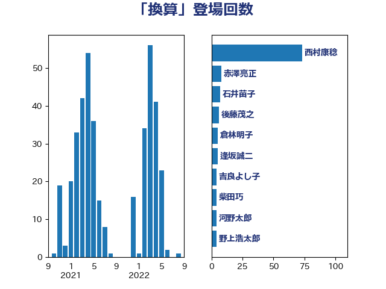

単語「換算」

| 西村康稔 | 自由民主党 | 73 回 |
| 赤澤亮正 | 自由民主党 | 8 回 |
| 石井苗子 | 日本維新の会 | 7 回 |
| 後藤茂之 | 自由民主党 | 6 回 |
| 倉林明子 | 日本共産党 | 5 回 |
| 逢坂誠二 | 立憲民主党 | 5 回 |
| 吉良よし子 | 日本共産党 | 4 回 |
| 柴田巧 | 日本維新の会 | 4 回 |
| 河野太郎 | 自由民主党 | 4 回 |
| 野上浩太郎 | 自由民主党 | 4 回 |
| 高木かおり | 日本維新の会 | 4 回 |
| 古賀之士 | 立憲民主党 | 3 回 |
| 塩川鉄也 | 日本共産党 | 3 回 |
| 小沼巧 | 立憲民主党 | 3 回 |
| 早稲田ゆき | 立憲民主党 | 3 回 |
| 末次精一 | 立憲民主党 | 3 回 |
| 本村伸子 | 日本共産党 | 3 回 |
| 浜口誠 | 国民民主党 | 3 回 |
| 上田清司 | 国民民主党 | 2 回 |
| 中川郁子 | 自由民主党 | 2 回 |
| 前原誠司 | 国民民主党 | 2 回 |
| 宮本徹 | 日本共産党 | 2 回 |
| 小宮山泰子 | 立憲民主党 | 2 回 |
| 小泉進次郎 | 自由民主党 | 2 回 |
| 山本剛正 | 日本維新の会 | 2 回 |
| 山際大志郎 | 自由民主党 | 2 回 |
| 岡本あき子 | 立憲民主党 | 2 回 |
| 岸田文雄 | 自由民主党 | 2 回 |
| 末松信介 | 自由民主党 | 2 回 |
| 本田顕子 | 自由民主党 | 2 回 |
| 浅野哲 | 国民民主党 | 2 回 |
| 田村憲久 | 自由民主党 | 2 回 |
| 田村智子 | 日本共産党 | 2 回 |
| 神谷裕 | 立憲民主党 | 2 回 |
| 福田昭夫 | 立憲民主党 | 2 回 |
| 紙智子 | 日本共産党 | 2 回 |
| 舞立昇治 | 自由民主党 | 2 回 |
| 西村智奈美 | 立憲民主党 | 2 回 |
| 赤羽一嘉 | 公明党 | 2 回 |
| 野田聖子 | 自由民主党 | 2 回 |
| 長友慎治 | 国民民主党 | 2 回 |
| 高橋千鶴子 | 日本共産党 | 2 回 |
| たがや亮 | れいわ新選組 | 1 回 |
| 中野英幸 | 自由民主党 | 1 回 |
| 串田誠一 | 日本維新の会 | 1 回 |
| 伊藤岳 | 日本共産党 | 1 回 |
| 佐藤英道 | 公明党 | 1 回 |
| 加田裕之 | 自由民主党 | 1 回 |
| 勝部賢志 | 立憲民主党 | 1 回 |
| 吉田はるみ | 立憲民主党 | 1 回 |
| 和田義明 | 自由民主党 | 1 回 |
| 大串博志 | 立憲民主党 | 1 回 |
| 大島敦 | 立憲民主党 | 1 回 |
| 大西英男 | 自由民主党 | 1 回 |
| 小池晃 | 日本共産党 | 1 回 |
| 小野泰輔 | 日本維新の会 | 1 回 |
| 山下芳生 | 日本共産党 | 1 回 |
| 山井和則 | 立憲民主党 | 1 回 |
| 山本香苗 | 公明党 | 1 回 |
| 山添拓 | 日本共産党 | 1 回 |
| 岩田和親 | 自由民主党 | 1 回 |
| 岸信夫 | 自由民主党 | 1 回 |
| 川田龍平 | 立憲民主党 | 1 回 |
| 平木大作 | 公明党 | 1 回 |
| 平林晃 | 公明党 | 1 回 |
| 斎藤アレックス | 国民民主党 | 1 回 |
| 杉久武 | 公明党 | 1 回 |
| 東徹 | 日本維新の会 | 1 回 |
| 松山政司 | 自由民主党 | 1 回 |
| 梶山弘志 | 自由民主党 | 1 回 |
| 横沢高徳 | 立憲民主党 | 1 回 |
| 武部新 | 自由民主党 | 1 回 |
| 池畑浩太朗 | 日本維新の会 | 1 回 |
| 河野義博 | 公明党 | 1 回 |
| 泉健太 | 立憲民主党 | 1 回 |
| 清水真人 | 自由民主党 | 1 回 |
| 滝波宏文 | 自由民主党 | 1 回 |
| 牧山ひろえ | 立憲民主党 | 1 回 |
| 石井浩郎 | 自由民主党 | 1 回 |
| 石川大我 | 立憲民主党 | 1 回 |
| 福島みずほ | 社会民主党 | 1 回 |
| 福島伸享 | 無所属 | 1 回 |
| 笠井亮 | 日本共産党 | 1 回 |
| 笠浩史 | 無所属 | 1 回 |
| 緑川貴士 | 立憲民主党 | 1 回 |
| 舟山康江 | 国民民主党 | 1 回 |
| 萩生田光一 | 自由民主党 | 1 回 |
| 藤原崇 | 自由民主党 | 1 回 |
| 藤田文武 | 日本維新の会 | 1 回 |
| 赤嶺政賢 | 日本共産党 | 1 回 |
| 足立敏之 | 自由民主党 | 1 回 |
| 近藤昭一 | 立憲民主党 | 1 回 |
| 道下大樹 | 立憲民主党 | 1 回 |
| 遠藤良太 | 日本維新の会 | 1 回 |
| 重徳和彦 | 立憲民主党 | 1 回 |
| 金子恵美 | 立憲民主党 | 1 回 |
| 金村龍那 | 日本維新の会 | 1 回 |
| 鈴木英敬 | 自由民主党 | 1 回 |
| 鈴木貴子 | 自由民主党 | 1 回 |
| 青木愛 | 立憲民主党 | 1 回 |
| 音喜多駿 | 日本維新の会 | 1 回 |
| 馬場雄基 | 立憲民主党 | 1 回 |
| 高橋光男 | 公明党 | 1 回 |
| 麻生太郎 | 自由民主党 | 1 回 |
| 黄川田仁志 | 自由民主党 | 1 回 |